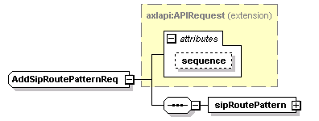

| diagram |  | ||||||||||||
| namespace | http://www.cisco.com/AXL/API/10.5 | ||||||||||||
| type | extension of axlapi:APIRequest | ||||||||||||
| properties |
|
||||||||||||
| children | sipRoutePattern | ||||||||||||
| used by |
|
||||||||||||
| attributes |
|
||||||||||||
| source | <xsd:complexType name="AddSipRoutePatternReq"> <xsd:complexContent> <xsd:extension base="axlapi:APIRequest"> <xsd:sequence> <xsd:element name="sipRoutePattern" type="axlapi:XSipRoutePattern"/> </xsd:sequence> </xsd:extension> </xsd:complexContent> </xsd:complexType> |
element AddSipRoutePatternReq/sipRoutePattern
| diagram |  |
||
| type | axlapi:XSipRoutePattern | ||
| properties |
|
||
| children | pattern description usage routePartitionName blockEnable callingPartyTransformationMask useCallingPartyPhoneMask callingPartyPrefixDigits callingLinePresentationBit callingNamePresentationBit connectedLinePresentationBit connectedNamePresentationBit sipTrunkName dnOrPatternIpv6 routeOnUserPart useCallerCss domainRoutingCssName | ||
| source | <xsd:element name="sipRoutePattern" type="axlapi:XSipRoutePattern"/> |
XML Schema documentation generated by XMLSpy Schema Editor http://www.altova.com/xmlspy